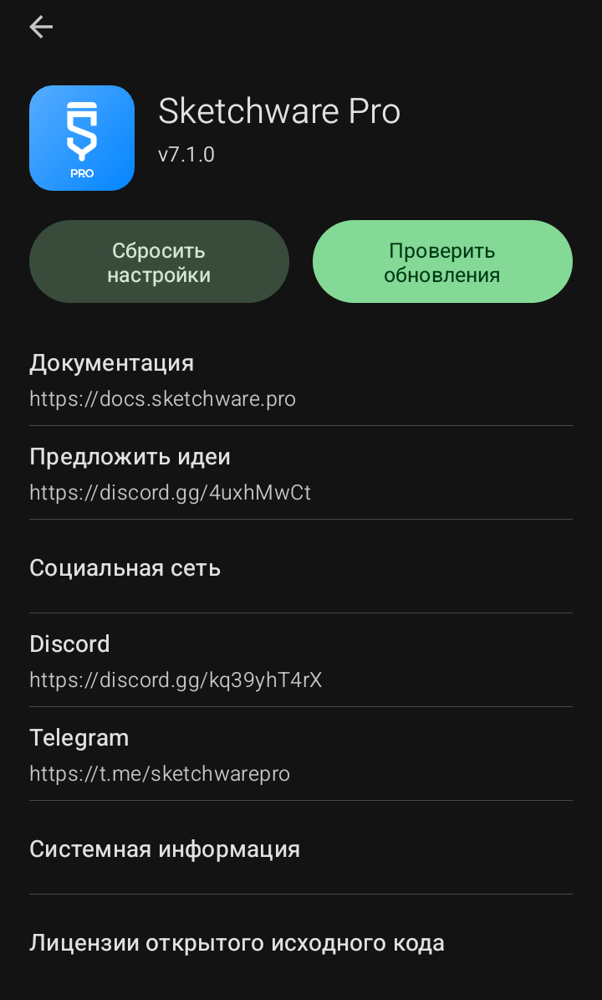

Окно «О программе» (Ссылки и версия)

Это информационный экран, который открывается при нажатии на пункт «Информация о приложении» в главном меню.
·
Логотип и версия:
Показывает, что у вас установлена версия 7.1.0.
·
Сбросить настройки:
Возвращает все настройки приложения к заводским значениям. Осторожно: это может затронуть ваши проекты, если вы не сделали резервную копию.
·
Проверить обновления:
Программа свяжется с сервером разработчиков и проверит, есть ли более новая версия.
·
Документация:
Ссылка на официальный сайт с технической документацией (на английском языке).
·
Предложить идеи:
Ссылка на Discord-сервер для связи с разработчиками.
·
Социальная сеть:
Ссылки на Telegram и Discord сообщества Sketchware Pro, где можно общаться с другими пользователями и задавать вопросы.
·
Системная информация:
Показывает данные о вашем устройстве (версия Android, модель и т.д.) для отладки.
·
Лицензии открытого исходного кода:
Юридическая информация о библиотеках, использованных в приложении.
Sketchware Pro 7 · Автор: RasNikGal · © 2026